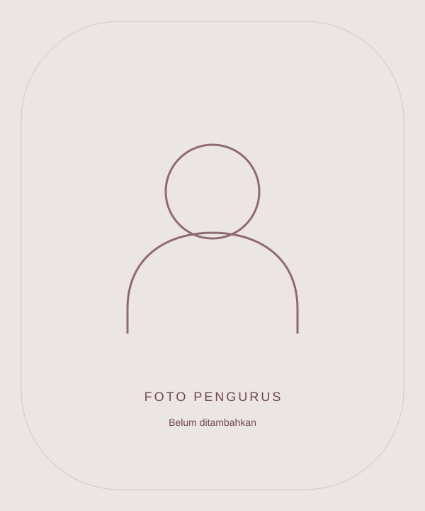

Mendengarkan aspirasi
Memberikan ruang bagi siswa untuk menyampaikan ide, masukan, dan kebutuhan di lingkungan sekolah.
Majelis Perwakilan Kelas · SMANSAPA
Ruang untuk mengenal MPK, mengikuti kegiatan, dan menyampaikan gagasan untuk kehidupan sekolah yang lebih baik.
01 / Tentang kami
Majelis Perwakilan Kelas (MPK) merupakan wadah perwakilan siswa untuk membawa suara kelas ke dalam kehidupan organisasi sekolah.
Halaman ini menjadi tempat untuk mengenal organisasi, mengikuti dokumentasi kegiatan, dan menemukan akses ruang aspirasi.
Profil awal · menunggu pelengkapan data resmiMemberikan ruang bagi siswa untuk menyampaikan ide, masukan, dan kebutuhan di lingkungan sekolah.
Membawa beragam sudut pandang siswa sebagai bahan diskusi dan pertimbangan bersama.
Mengajak siswa peduli, terlibat, dan berkontribusi dalam perkembangan lingkungan sekolah.
02 / Kepengurusan inti
Ruang perkenalan pengurus inti MPK. Nama dan foto akan dilengkapi sesuai kepengurusan aktif.

Nama belum dicantumkan
Nama belum dicantumkan
Nama belum dicantumkan
Nama belum dicantumkan
Struktur di atas merupakan rancangan awal dan dapat disesuaikan dengan kepengurusan MPK.
03 / Dokumentasi
Cerita, pertemuan, dan momen kebersamaan MPK dalam satu ruang. Foto kegiatan akan ditambahkan di sini.
Nama kegiatan, tanggal, dan cerita singkat akan ditambahkan di sini.
Nama kegiatan, tanggal, dan cerita singkat akan ditambahkan di sini.
Nama kegiatan, tanggal, dan cerita singkat akan ditambahkan di sini.
04 / Ruang aspirasi
Punya ide atau masukan untuk sekolah? Sampaikan dengan bahasa yang jelas, santun, dan membangun agar gagasanmu mudah dipahami.
Ruang aspirasi dirancang menggunakan Google Form agar mudah diakses dari ponsel maupun komputer.
Tautan akan diaktifkan setelah Google Form resmi MPK tersedia. Belum ada aspirasi yang dikumpulkan melalui halaman ini.
Informasi tambahan
Ide kegiatan, saran fasilitas, atau masukan tentang kehidupan sekolah. Jelaskan konteks dan usulan perbaikan secara santun. Hindari menyertakan data pribadi orang lain.
Pengaturan identitas mengikuti Google Form resmi yang nantinya ditautkan. Baca keterangan formulir dan persyaratan login sebelum mengirim; website ini belum menjanjikan pengiriman anonim.
Kunjungi Instagram @mpk_smansapa ↗. Dokumentasi website akan diperbarui setelah materi kegiatan tersedia.